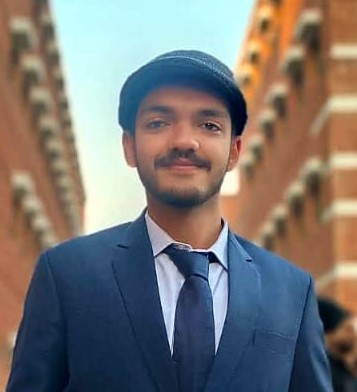
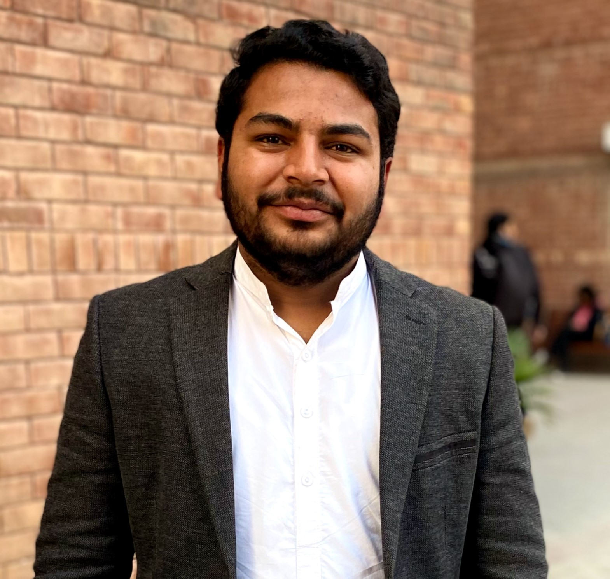
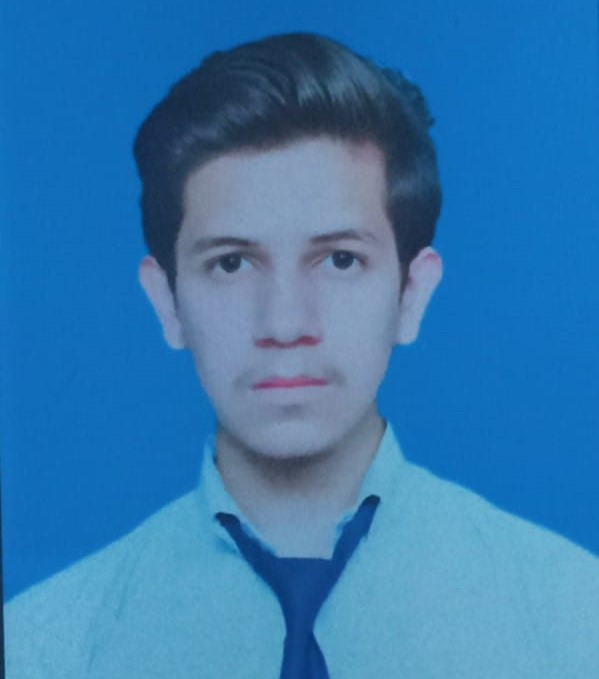
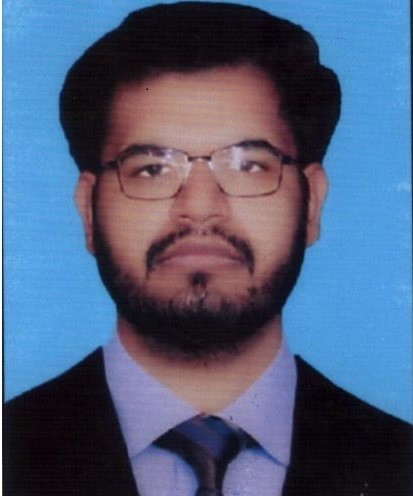

ABOUT DOCTORS

Talha Rizwan
Neurosurgeon
Neurology Department
Email: email@example.com
Phone: (123) 456-7890
About Dr. TALHA
Dr. Talha is a highly esteemed Neurosurgeon in our
Neurology Department. With an extensive background
and years of experience in the field, Dr. Talha specializes in the diagnosis and surgical
treatment of disorders of the central and peripheral nervous system. This includes congenital anomalies, trauma, tumors,
vascular disorders, infections of the brain
or spine, stroke, or degenerative diseases of the spine.
Committed to staying at the forefront
of the latest advancements in neurosurgery,
Dr. Talha ensures that our patients receive the
most comprehensive and effective treatments available. His approach to patient care is marked by thoroughness and compassion,
ensuring that each patient feels heard, understood,
and confident in their treatment plan

Muhammad Danish Shafique
Surgeon
Cardiology Department
Email: email@example.com
Phone: (123) 456-7890
About Dr. DANISH
Dr. Muhammad Danish Shafique is a respected Surgeon in our Cardiology Department.
With a wealth of experience and a deep understanding of the field, Dr. Danish specializes
in surgical procedures related to the heart and blood vessels.
His expertise includes treating conditions such as heart disease, vascular disorders, and congenital heart defects.
Dr. Danish’s commitment to staying updated with the latest advancements in cardiac surgery ensures that our patients receive the most
comprehensive and effective treatments available. His approach to patient care is characterized by meticulousness and empathy, ensuring
that each patient feels understood, comfortable, and confident in their treatment plan

Asad Ali
Psychiatrist
General Adult Psychiatry Department
Email: email@example.com
Phone: (123) 456-7890
About Dr. ASAD
Dr. Asad Ali is a distinguished Psychiatrist in our General Adult Psychiatry Department.
He brings a wealth of knowledge and a profound comprehension of the field, specializing
in psychiatric procedures associated with mental health disorders.
His proficiency includes the treatment of conditions such as depression, anxiety disorders, and bipolar disorder.
Dr. Asad’s dedication to keeping abreast of the latest developments in psychiatry ensures
that our patients benefit from the most thorough and effective treatments available. His patient care approach is marked by thoroughness and compassion,
guaranteeing that each patient feels acknowledged, at ease, and confident in their treatment plan.

Hammad Afzal
Ophthalmologist
Ophthalmology Department
Email: email@example.com
Phone: (123) 456-7890
About Dr. HAMMAD
Dr. Hammad Afzal is a distinguished Ophthalmologist in our Ophthalmology Department. He brings a wealth of knowledge
and a profound comprehension of the field, specializing in the diagnosis and treatment of eye and visual system disorders.
This includes congenital anomalies, trauma, tumors, vascular disorders, infections of the eye, vision problems, or degenerative diseases of the eye.
Dr. Hammad’s dedication to keeping abreast of the latest developments in ophthalmology
ensures that our patients benefit from the most thorough and effective treatments available.
His patient care approach is marked by meticulousness and empathy
, guaranteeing that each patient feels acknowledged, at ease, and confident in their treatment plan